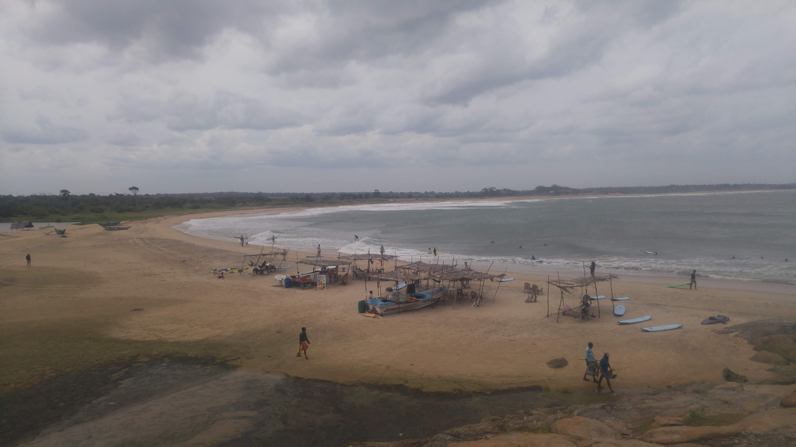

Go Back
Arugam Bay

Arugam Bay is a small, predominantly muslim town on the east of Sri Lanka on the Indian Ocean. It's one of Sri Lanka's most famous tourist destinations and is known as the best surf spot in the country. It's the only international surfing venue in the country and attracts many Europeans and Australians due to its waves and surf culture. Arugam Bay has different beaches that range from intense waves to milder waves which are easier for beginners. A popular activity here for many people is try surfing. There are plenty of businesses that offer lessons and rentals. Aside from this a few fun activities to enjoy are going to the beach, hiking up Elephant Rock and going on a tuk tuk safari.
There are a few beaches in the area. The most notable one is Arugam Bay Beach. This is where you'll see the most people, many boats, restaurants/ bars as well as some surfers and rental shops. The beach was one of my favourite places to hangout and enjoy this chill town. Another cool experience on the beach here is going to Mambo Club on a Saturday night. They have a big psy-trance style party which reminded me of my time in Goa, India. This was a fun experience right on the beach of Arugam Bay. Another beach I went to was the one right next to Elephant Rock which I will mention below. This beach was a bit out of town and was quieter. It's a very popular spot for surfers as well as people who'd like to learn to surf. There are shacks that rent surf boards and lessons. If you don't want to surf you can swim or just enjoy a fresh coconut.
Just south of the town is Elephant Rock. It's quite easy to hike up and offers beautiful views of the surrounding beaches. The hike itself only takes up a short amount of time and you can spend the rest relaxing on the adjacent beach or even try surfing. There are less people here than on the main beach in the town so it's more tranquil and gives you more of a secluded tropical beach vibe. This is a fun place to go and spend the afternoon.
As with many places in Sri Lanka there are tuk tuk safaris offered in the area. While it was common for accomodations to offer tours we opted to go by ourselves in a tuk tuk. My Dutch friends were travelling the country by tuk tuk so we set off on an adventure to see what we could find. I'm sure local tour guides know the spots where it's most likely to see animals. We didn't see a whole lot but did see a big herd of buffalo and a few elephants though ironically off the main road on our way back from the "safari". As mentioned if you really want to see as many animals as possible I'd recommend going on a tour with people who know exactly where to look.
There were some good restaurants along the main road in Arugam Bay. Check out AB Food Stop for delicious rotis, Hello Burger for great burgers, Pizza Hub for pizza, and definitely have some Indian or Sri Lankan food at one of the many places on the main street. As Arugam Bay is right on the beach it's a great place to get fresh seafood. On the side of the road you'll see many places offering barbecued fish. One of the best meals I had here was a fish pictured below with rice and vegetables.
I enjoyed my stay at the Long Hostel here and would recommend it for anyone staying in hostels. The hostel was well-run by the German owner and his friendly staff. The social atmosphere here was great and people would gather in the common area every night and play games like cards and carrom which is a popular game in Sri Lanka as well as India. They also had a little cafe/ restaurant that offered good food. This hostel was especially popular with surfers but also with regular travellers. It's very well located right on the main road across from the beach and near many restaurant and nightlife options.